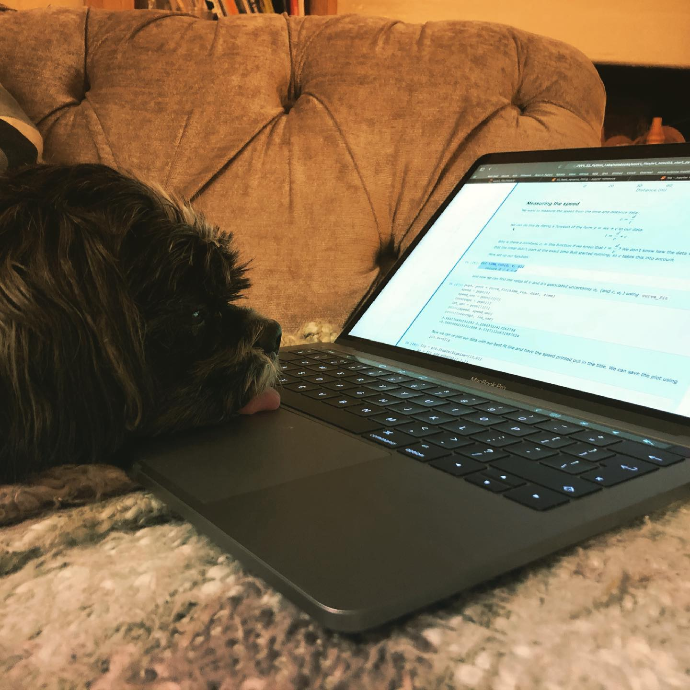
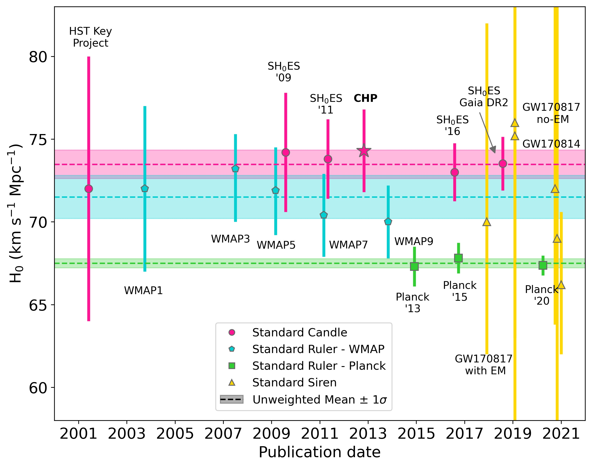

Uncertainties#
Overview#
Questions
Why are we talking about uncertainties again?
Will Vicky ever stop talking about uncertainties?
Objectives
Find the best fit parameters and their uncertainties for the Cepheid data
In an unusual turn of events, I haven’t been hammering on about the importance of uncertainties yet in this lesson. We’re going to look at them in more detail here.
Uncertainties are important!#
Without an estimate of uncertainty, a scientific result is basically meaningless. I could tell you that the length of my dog is 2 meters. That sounds unlikely. But if I told you the length of my dog was \(2 \pm 1\) meters because I tried to measure him while he was moving, you’d now know how reliable my measurement was.
For reference, this is the dog in question. He is not 2 m long.
{kind=link}
While knowing the uncertainty on the length of my dog may not be the most important thing, uncertainties are the most important thing.
One example of this is measurements of the Hubble constant (the expansion rate of the Universe). There are several ways of measuring this value, each of which has its own pro’s and con’s, and it’s own uncertainties. Right now, the two main ways of measuring it (using supernovae and the cosmic microwave background) give different answers. The techniques have improved so much in the last few years that the uncertainties on each of these techniques are now very small. So small that we can confidently say that the results don’t agree with each other.
The figure below shows the results from different techniques as a function of publication date. The important ones are the pink points (measured using supernovae) and the green points (the most recent measurements from the cosmic microwave background). They don’t agree!
{kind=link}
There are several teams working on repeating the measurements and taking new measurements to try to resolve the problem. One reason for the difference could be that one of the measurements is wrong - there could have been a mistake in the analysis for example. But the other reason is more exciting; we can make the measurements agree if we change some of the physics that goes into the model we use to fit the data. We could have discovered something completely unexpected about how the universe evolves! BUT. Before we can claim that we’ve found some new physics, we have to be really sure that the results and their uncertainties are correct.
If you want to know more about what’s happening with the Hubble constant there’s a nice article here
Gaussian uncertainties#
We usually assume that the uncertainties follow a Gaussian distribution. For a Gaussian distribution, the probability of measuring a value \(x\) when the true value is \(\langle x \rangle\) with an uncertainty \(\sigma\) is shown in the figure below:

What this shows is that (statistically speaking) it’s quite likely for us to measure a value that is 1.25 \(\sigma\) away from the “true” value. There’s approximately a 21% chance of measuring a difference greater than \(\pm\) 1.25 \(\sigma\). Note: If you want to calculate the probability of measuring a give \(\sigma\) deviation you can use a statistical table, such as this one.
So when is the difference significant? When would we say that the values don’t agree? It’s common in astronomy to use 3 \(\sigma\) as the limit for statistical significance. As the figure shows, there’s only a 0.3% chance of a measurement that is more than 3 \(\sigma\) away from the mean occurring by chance. So we say that a measurement is consistent if it is within 3 \(\sigma\) of the expected value, and discrepant if if lies further than 3 \(\sigma\) from the expected value.
So when you’re comparing measurements you make in the lab to the “true” values, you can check if your measurement agrees statistically with the published value by checking how many \(\sigma\)’s away it is.
Exercise: Find the uncertainties on the Cepheid data
Using the LMC cepheid data, fit relations between \(\log_{10} P\) and magnitude for both wavelengths (mag_1 and mag_2).
Find the best fit values of \(a\) and \(b\) and their uncertainties for each wavelength. Comment on how the results compare to each other.
Hint: If you need a refresher on how to calculate the uncertainties in your fitted parameters, take a look at the C2 worksheet.
Exercise: Subplots
We’ve been using subplots throughout these notebooks but generally only had one plot. Now we want two!
Make plots of the LMC data for each wavelength. Add lines of best fit to each plot. Change the options in subplot to make two plots next to each other.
Exercise: Fit a lightcurve
Here you’re going to be looking at some of the original data on the LMC Cepheids. HV00872_phot.csv contains the original measurements of the first Cepheid in the LMC table.
In this file phase corresponds to the Cepheid’s pulsation phase (between 0 and 1), and the mag and err columns are now the magnitude and uncertainties at different points in the pulsation cycle.
Read in the data to a dataframe. Plot magnitude as a function of phase for each wavelength.
Define and fit function of the form
to the data, where \(m\) is the magnitude, \(m_0\) is the average magnitude, \(A\) is the amplitude, \(\phi\) is the phase and \(\delta\) is a phase shift.
Find the best values of \(m_0\) (and their uncertainties) for each wavelength. How do they compare with the values given in the LMC Cepheid table? Do they agree?
Note: This may appear to be a more challenging exercise at first glance, but don’t panic! You will be using the same techniques as you have for all the other fitting you’ve done, the thing that’s changing is the function you want to fit. solution
Key Points#
Uncertainties are important!
Uncertainties tell you how believable your data is.
A measurement without an uncertainty is meaningless!